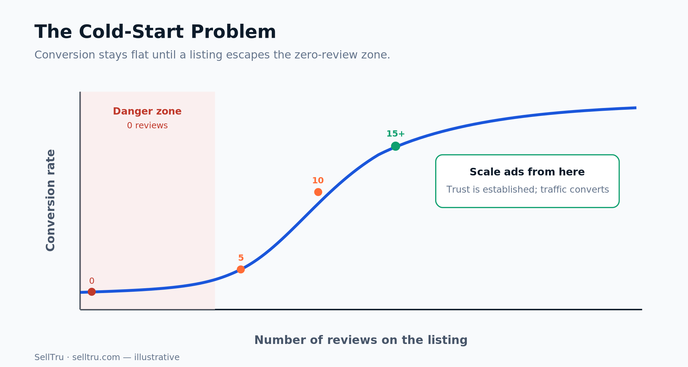
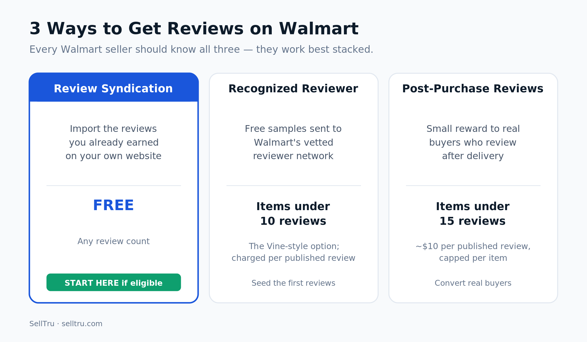
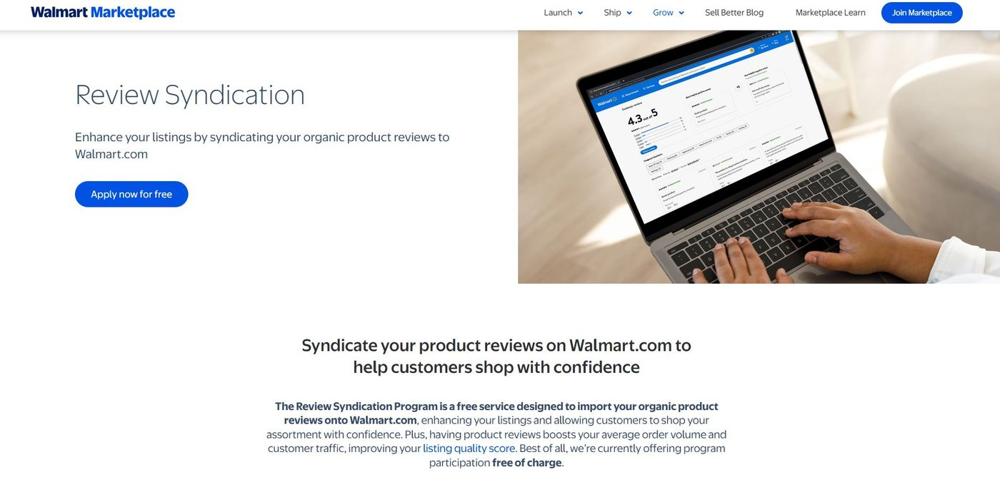
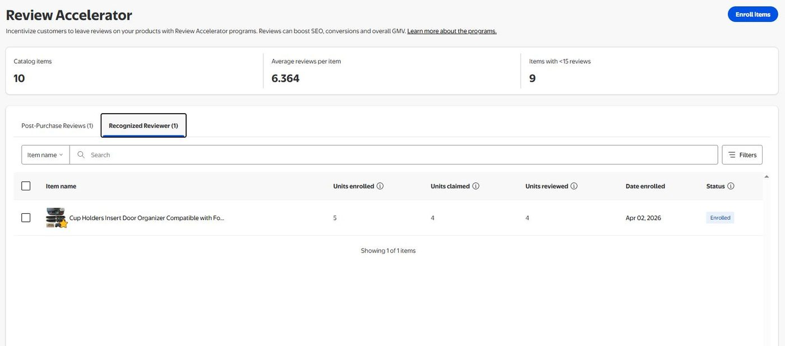
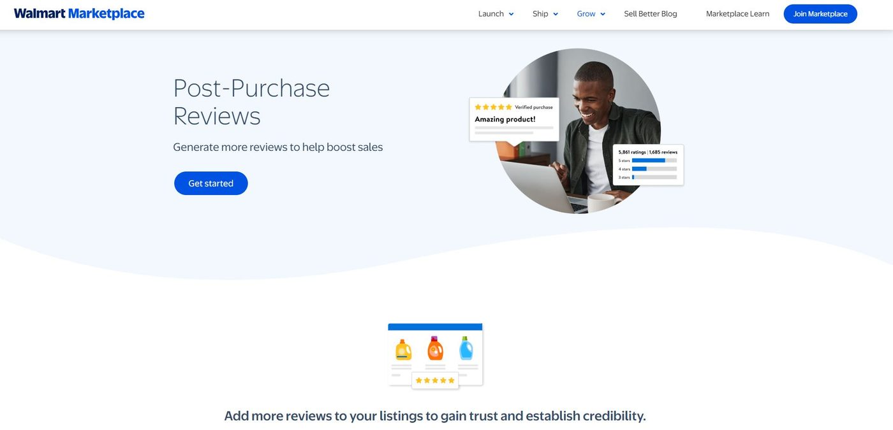
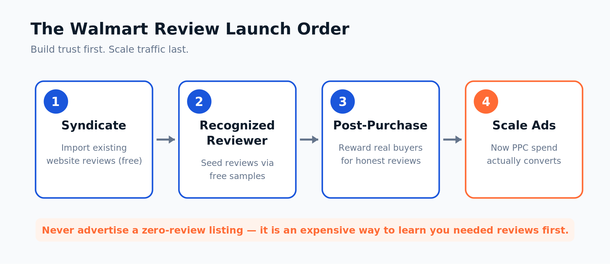
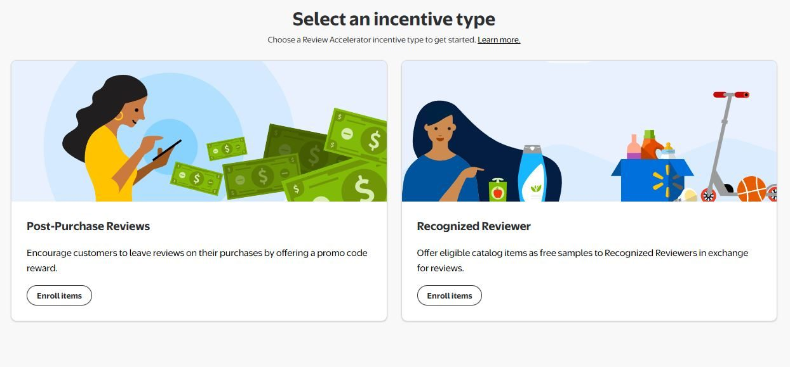

Walmart
How to Get More Walmart Reviews (2026 Guide)
If you came from Amazon, you already know the cold-start problem by heart: a brand-new listing with zero reviews barely converts, no matter how good the product is or how sharp the price looks. On Amazon you'd reach for the Vine program to seed those first reviews. So when sellers expand to Walmart and go looking for the Walmart version, most assume it doesn't exist — or that getting reviews on Walmart is slow, expensive, and complicated.
It used to be. Not anymore. Walmart now gives sellers several legitimate, compliant ways to build reviews on a new listing — including a Vine-style program and a free way to import the reviews you've already earned on your own website. This guide covers every option, the order I'd use them in on a launch, how reviews actually work on Walmart, and how to stay firmly inside Walmart's rules while you do it.
Why reviews decide whether your Walmart launch works
Reviews are not a post-launch task. They are part of the launch. Walmart's own research shows that customers who read reviews are over 70% more likely to purchase than those who don't. A listing sitting at zero reviews is fighting uphill before a single ad dollar goes out the door.
That's the part most sellers get backwards. They launch the product, turn on Walmart advertising, and then wonder why their cost per conversion is brutal. The traffic is landing on a page shoppers have no reason to trust yet. I won't scale traffic to a zero-review listing — it's just an expensive way to learn that you needed reviews first. Build the trust, then pour on the traffic.

The cold-start rule: Get the listing out of the zero-review stage before you scale ads. Push toward 5, then 10, then 15+ reviews — and only then advertise aggressively.
The four types of reviews on Walmart
Before the programs, it helps to know what kinds of reviews exist on Walmart, because each program produces a different one:
- Native reviews — submitted directly by customers on Walmart.com after a purchase. The default, organic kind.
- Verified Purchase reviews — native reviews from a confirmed buyer, badged "Verified Purchase" to signal authenticity.
- Syndicated reviews — imported from your own website onto your Walmart listing, displayed with your brand or site attribution.
- Incentivized reviews — collected through a Walmart program that offers a reward or free sample, and clearly badged as incentivized for transparency.
Notice what's missing: there's no legitimate "buy reviews" category. Every compliant path below produces one of these four labeled types — nothing hidden, nothing manipulated.
The three Walmart review programs every seller should know
These three programs are the engine room of a Walmart review strategy. They aren't either/or — they stack, and the best launches use all three in sequence.

1. Review Syndication — free, and the one most people miss
This is the big one, and it's the program almost nobody talks about. If you already collect reviews on your own Shopify or WordPress store, Walmart's Review Syndication Program lets you import those organic reviews straight onto your matching Walmart listings — with your brand attribution attached — completely free of charge. Amazon does not allow anything like this. Walmart does.
The requirements are straightforward. The reviews must be collected organically and displayed on your own consumer-facing website (reviews from other marketplaces can't be syndicated), you have to moderate them for fraudulent or inappropriate content per Walmart's content policies, and you can't be running a separate paid syndication service to Walmart at the same time. If you qualify, you apply for free through Walmart, they import your existing reviews, and new reviews on your site keep flowing to the listing. Reviews generally appear within five to seven business days.

2. The Recognized Reviewer program — the Walmart Vine equivalent
This is the closest thing Walmart has to Amazon Vine, and it's relatively new. With the Recognized Reviewer program, you enroll eligible items and provide product samples that Walmart distributes to a vetted network of trusted reviewers, who then leave honest, unbiased feedback that's clearly labeled on the listing. Eligibility is for items with fewer than 10 reviews — exactly the launch-stage products that need help. You cover the product cost and shipping plus the program fee, the per-review cost is shown to you at enrollment, and you're only charged for reviews that actually get published. Enrollment is capped (up to roughly 15 units per item group), so it seeds reviews without an unlimited product giveaway.

3. Post-Purchase Reviews — incentivize real buyers
The Post-Purchase Reviews program offers a small digital reward to customers who buy your product and then leave a review about a week after delivery. It's available for items with fewer than 15 reviews and some prior sales history. The fee runs about $10 per published review, and you're capped at a handful of incentivized reviews per item, so it's a controlled cost. Like the others, these reviews are badged for transparency.

The myth: review syndication has to cost $5,000+
For years, getting syndicated reviews onto Walmart meant paying an enterprise platform — often $5,000 to $10,000 or more a year — to broker the connection. That history is exactly why a lot of sellers (and a lot of agencies) still assume syndication is a pricey, complicated project reserved for big brands.
It isn't anymore. Walmart's native Review Syndication Program does it for free if you own the reviews and meet the requirements. You do not need an enterprise tool just to get your existing reviews onto Walmart. That single change quietly removed one of the biggest barriers to a strong Walmart launch, and most sellers haven't caught up to it.
Approved sampling partners (if you want help)
If you'd rather run a structured sampling campaign than manage enrollment yourself, Walmart permits product sampling only through its approved third-party vendors. As of 2026 that approved list includes Field Agent, The Brand Power Company, and Bazaarvoice — and Walmart's Vine-style sampling actually runs through Field Agent. The hard rule with any of them: you can never use Walmart branding in the outreach, and you can never condition the free sample on a positive review. The ask is always for honest feedback, full stop.
The order I'd attack reviews on a new launch
Here's the simple framework I use. The sequence matters as much as the tactics — each step builds the trust the next one needs.


- Syndicate first, if you can. If you already collect reviews on your own website, apply for free Review Syndication before anything else. It's the fastest, cheapest way to walk a brand-new listing in with social proof already attached.
- Then enroll in the Recognized Reviewer program. If you don't have website reviews to syndicate, launch the product and enroll eligible items (under 10 reviews) here to seed that first wave the Vine way.
- Layer in Post-Purchase Reviews. Once orders are trickling in, use this to convert real buyers into reviewers and push past the 10–15 review mark.
- Only then scale traffic. With a trustworthy listing in place, your Walmart search ranking and ad efficiency both improve, and the money you spend actually converts.
I'll give you a real example. On one of my own Walmart listings — a pecan product — I syndicated about 51 reviews I'd already earned on my site. Within the first week, organic buyers started leaving reviews saying things like "I bought this because the reviews were great, and these are the best pecans I've ever had." That's syndication doing its job: shoppers really do read reviews to decide what to buy, and the social proof compounds.
Respond to your reviews — it builds credibility
Getting reviews is half the job; managing them is the other half. In Seller Center, open the Ratings and Reviews page, click the menu next to a review, and choose to respond publicly. Thank happy customers and address critical reviews professionally with a real solution. One caution: once you submit a response you can't edit or delete it, and your reply posts to the listing within about 72 hours — so proofread before you hit send.
How to remove an ineligible review
You can't delete reviews you simply don't like, but Walmart will remove ones that break its rules. Through a Product Feedback Removal Request you can flag a review if the star rating doesn't match the sentiment, the review is on the wrong product, the content is inappropriate or vulgar, a product update has made older reviews inaccurate (with documentation), or the negative experience was caused by Walmart itself (with supporting evidence). What Walmart won't remove: complaints about shipping, damage, or customer service, and reviews stemming from product misuse — unless there's a genuine risk of injury or liability. Expect a response from Seller Support in about five to seven business days.
What most agencies get wrong about Walmart reviews
Plenty of agencies are simply behind on Walmart. They either don't realize Walmart has structured review programs at all, or they're running on outdated information that says syndication is expensive and only worth it for enterprise brands. So they skip it entirely and tell clients to just "wait for reviews to come in" — which is the slowest, most expensive path there is. For most brands, there are compliant, low-cost (or free) review options sitting right there, unused. Closing that gap is one of the fastest wins when you grow a Walmart Marketplace account.
Keep it compliant — always
One non-negotiable: every method here is an approved, transparent program. There is no place for guaranteed reviews, incentivized reviews outside Walmart's own programs, product inserts begging for five stars, or asking friends and family to post. Walmart badges incentivized reviews for transparency and will suspend accounts that try to manipulate ratings. The whole point is to get more reviews the marketplace-safe way — faster than your competitors, without putting your account at risk.
Frequently asked questions
Does Walmart have a program like Amazon Vine?
Yes — the Recognized Reviewer program. You provide product samples that Walmart distributes to a vetted network of trusted reviewers, who leave honest, clearly labeled feedback. It's available for items with fewer than 10 reviews.
Is Walmart review syndication free?
Yes. Walmart's native Review Syndication Program is free of charge. It imports the organic reviews you've collected on your own website onto your matching Walmart listings — no paid enterprise platform required.
How long does it take for a Walmart review to post?
New product reviews typically appear within five to seven business days. If a review hasn't posted after about a week, it may have been held for a guideline violation.
How does Walmart calculate the overall star rating?
Walmart uses a proprietary algorithm that weighs the volume of 1–5 star ratings, the recency of reviews, and community feedback. For items with fewer than 50 ratings and reviews, it uses a simple average.
Can I ask customers for reviews or add a package insert?
No. Walmart prohibits soliciting reviews outside its approved programs, and promotional package inserts that request reviews are not allowed. Violations can lead to account suspension — use only Walmart-approved programs and partners.
Can I remove a negative Walmart review?
Only if it meets Walmart's removal criteria: an incorrect star rating, a review on the wrong product, inappropriate or vulgar content, an item update that makes prior reviews inaccurate, or a Walmart-caused issue with evidence. Walmart won't remove reviews for shipping or customer-service complaints, or for product misuse unless there's a risk of injury or liability.
The bottom line: Walmart reviews are no longer the bottleneck they used to be. Between free syndication, the Recognized Reviewer program, and Post-Purchase Reviews, you can take a fresh listing from zero to a credible review count before you ever scale spend — and on Walmart, that's exactly the order that wins.
Need More Walmart Reviews?
If your listings are stuck at zero reviews or have no clear review strategy, it's hurting both your conversion and your ad performance. SellTru builds compliant, launch-focused review plans using syndication, the Recognized Reviewer program, and Post-Purchase Reviews — so your products have the foundation they need before you spend more on ads.
Book a Walmart Review Strategy AuditHave experience with this? The SellTru blog accepts guest posts from Amazon sellers, agency pros, and ecommerce operators. See our submission guidelines →